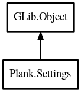

Settings
Object Hierarchy:

Description:
public abstract class Settings : Object
The base class for gsettings-based configuration classes. Defined properties will be bound to the corresponing schema-key of the given
schema-path. The property's nick-name must match the schema-key.
Content:
Properties:
- public Settings settings { construct; get; }
- public SettingsBindFlags bind_flags { construct; get; }
Creation methods:
Methods:
- protected virtual void verify (string name)
Verify the property given by its name and change the property if
necessary.
- protected void reset_all ()
Resets all properties to their default values.
- public void delay ()
Delays saving changes until apply() is called.
- public void apply ()
If any settings were changed, apply them now.
Inherited Members:
All known members inherited from class GLib.Object
- @new
- new_valist
- newv
- add_toggle_ref
- add_weak_pointer
- bind_property
- connect
- constructed
- disconnect
- dispose
- dup_data
- dup_qdata
- freeze_notify
- @get
- get_class
- get_data
- get_property
- get_qdata
- get_type
- notify_property
- @ref
- ref_sink
- replace_data
- replace_qdata
- remove_toggle_ref
- remove_weak_pointer
- @set
- set_data
- set_data_full
- set_property
- set_qdata
- set_qdata_full
- steal_data
- steal_qdata
- thaw_notify
- unref
- watch_closure
- weak_ref
- weak_unref
- notify
- ref_count